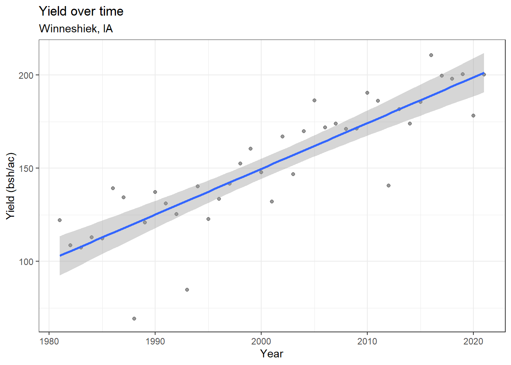
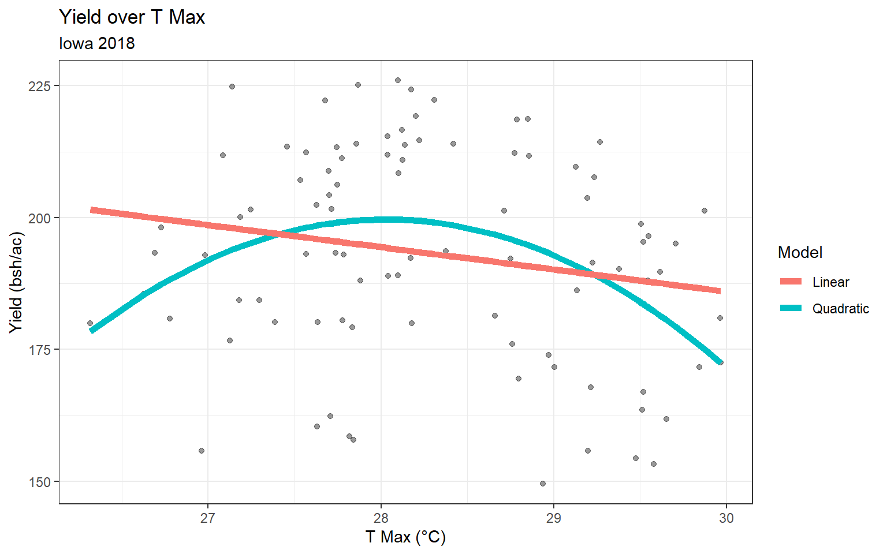
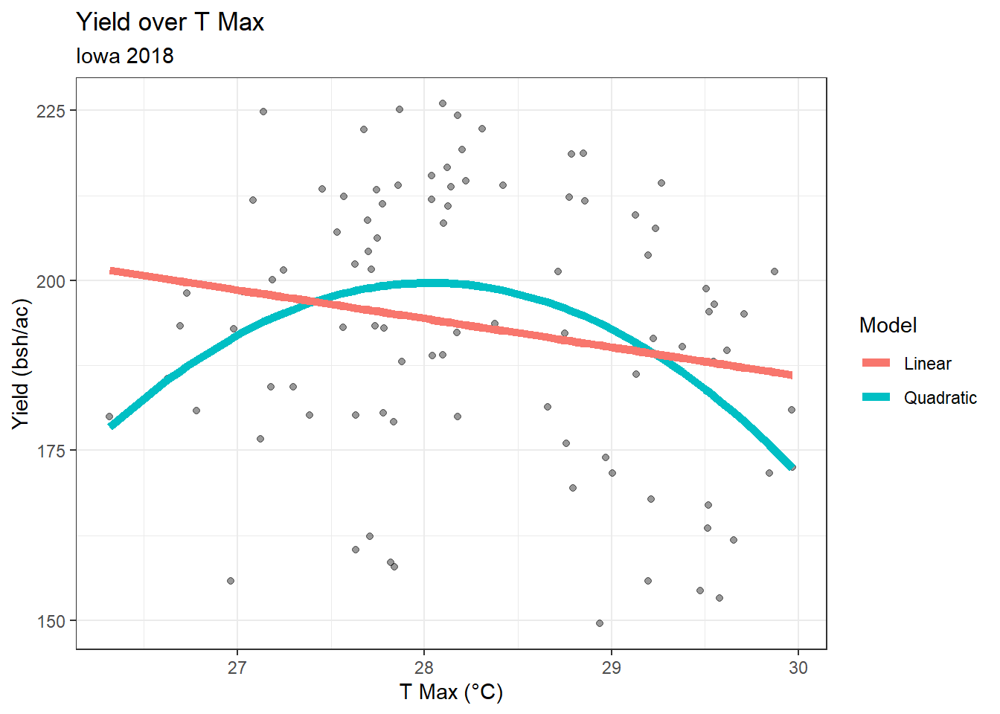
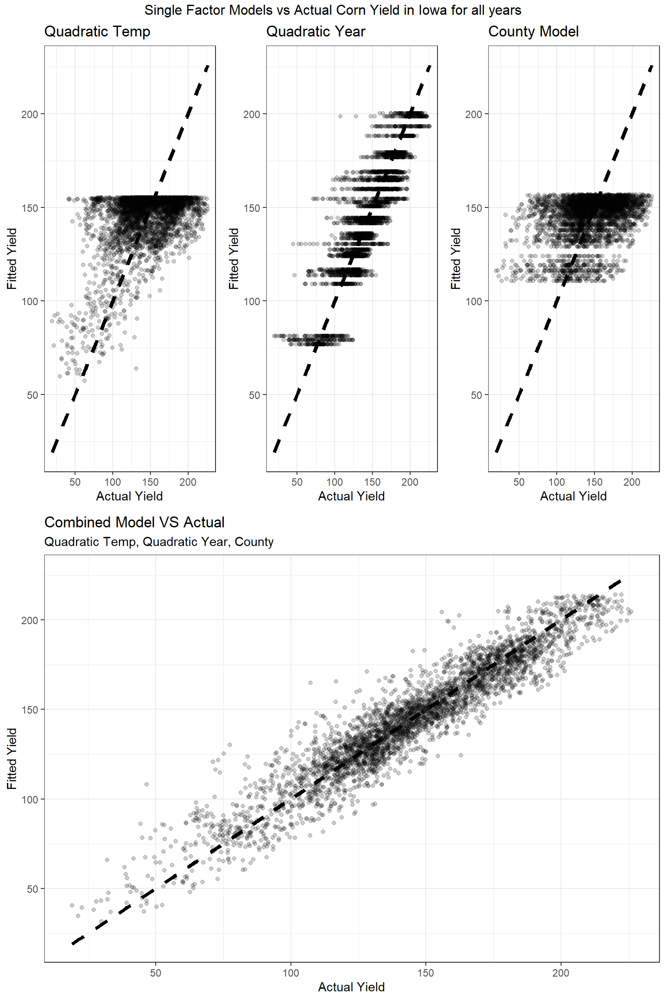

Chapter 4 Simple web scraping
R can read html using either rvest, xml, or xml2 packages. Here we are going to navigate to the Center for Snow and Avalanche Studies Website and read a table in. This table contains links to data we want to programmatically download for three sites. We don’t know much about these sites, but they contain incredibly rich snow, temperature, and precipitation data.
4.1 Reading an html
4.1.1 Extract CSV links from webpage
site_url <- 'https://snowstudies.org/archived-data/'
#Read the web url
webpage <- read_html(site_url)
#See if we can extract tables and get the data that way
tables <- webpage %>%
html_nodes('table') %>%
magrittr::extract2(3) %>%
html_table(fill = TRUE)
#That didn't work, so let's try a different approach
#Extract only weblinks and then the URLs!
links <- webpage %>%
html_nodes('a') %>%
.[grepl('24hr',.)] %>%
html_attr('href')4.2 Data Download
4.2.1 Download data in a for loop
#Grab only the name of the file by splitting out on forward slashes
splits <- str_split_fixed(links,'/',8)
#Keep only the 8th column
dataset <- splits[,8]
#generate a file list for where the data goes
datapath = 'data/snow/'
dir.create(datapath)## Warning in dir.create(datapath): 'data\snow' already existsfile_names <- paste0(datapath,dataset)
for(i in 1:3){
download.file(links[i],destfile=file_names[i])
}
downloaded <- file.exists(file_names)
evaluate <- !all(downloaded)4.3 Data read-in
4.3.1 Read in just the snow data as a loop
#Pattern matching to only keep certain files
snow_files <- file_names %>%
.[!grepl('SG_24',.)] %>%
.[!grepl('PTSP',.)]
#empty_data <- list()
# snow_data <- for(i in 1:length(snow_files)){
# empty_data[[i]] <- read_csv(snow_files[i]) %>%
# select(Year,DOY,Sno_Height_M)
# }
#snow_data_full <- do.call('rbind',empty_data)
#summary(snow_data_full)4.3.2 Read in the data as a map function
our_snow_reader <- function(file){
name = str_split_fixed(file,'/',2)[,2] %>%
gsub('_24hr.csv','',.)
df <- read_csv(file) %>%
select(Year,DOY,Sno_Height_M) %>%
mutate(site = name)
}
snow_data_full <- map_dfr(snow_files,our_snow_reader)## Rows: 6211 Columns: 52
## -- Column specification --------------------------------------------------------
## Delimiter: ","
## dbl (52): ArrayID, Year, DOY, Hour, LoAir_Min_C, LoAir_Min_Time, LoAir_Max_C...
##
## i Use `spec()` to retrieve the full column specification for this data.
## i Specify the column types or set `show_col_types = FALSE` to quiet this message.
## Rows: 6575 Columns: 48
## -- Column specification --------------------------------------------------------
## Delimiter: ","
## dbl (48): ArrayID, Year, DOY, Hour, LoAir_Min_C, LoAir_Min_Time, LoAir_Max_C...
##
## i Use `spec()` to retrieve the full column specification for this data.
## i Specify the column types or set `show_col_types = FALSE` to quiet this message.summary(snow_data_full)## Year DOY Sno_Height_M site
## Min. :2003 Min. : 1.0 Min. :-3.523 Length:12786
## 1st Qu.:2008 1st Qu.: 92.0 1st Qu.: 0.350 Class :character
## Median :2012 Median :183.0 Median : 0.978 Mode :character
## Mean :2012 Mean :183.1 Mean : 0.981
## 3rd Qu.:2016 3rd Qu.:274.0 3rd Qu.: 1.520
## Max. :2021 Max. :366.0 Max. : 2.905
## NA's :45544.3.3 Plot snow data
snow_yearly <- snow_data_full %>%
group_by(Year,site) %>%
summarize(mean_height = mean(Sno_Height_M,na.rm=T))## `summarise()` has grouped output by 'Year'. You can override using the
## `.groups` argument.ggplot(snow_yearly,aes(x=Year,y=mean_height,color=site)) +
geom_point() +
ggthemes::theme_few() +
ggthemes::scale_color_few()## Warning: Removed 2 rows containing missing values (geom_point).
4.4 Assignment:
4.4.1 1. Extract the meteorological data URLs.
Here we want you to use the rvest package to get the URLs for the SASP forcing and SBSP_forcing meteorological data sets.
q1_links <- webpage %>%
html_nodes('a') %>%
.[grepl('forcing',.)] %>%
html_attr('href')4.4.2 2. Download the meteorological data.
Use the download_file and str_split_fixed commands to download the data and save it in your data folder. You can use a for loop or a map function.
q2_splits <- str_split_fixed(q1_links,'/',8)
#Keep only the 8th column
q2_dataset <- q2_splits[,8]
q2_file_names <- paste0(datapath,q2_dataset)
for(i in 1:2){
download.file(q1_links[i],destfile=q2_file_names[i])
}
q2_downloaded <- file.exists(file_names)
evaluate <- !all(q2_downloaded)4.4.3 3. Read data
Write a custom function to read in the data and append a site column to the data.
# this code grabs the variable names from the metadata pdf file
q3_headers <- pdf_text('https://snowstudies.org/wp-content/uploads/2022/02/Serially-Complete-Metadata-text08.pdf') %>%
readr::read_lines(.) %>%
trimws(.) %>%
str_split_fixed(.,'\\.',2) %>%
.[,2] %>%
.[1:26] %>%
str_trim(side = "left")
q3_reader <- function(file){
fileName = str_split_fixed(file,'/',2)[,2]
nameRight = str_split_fixed(fileName,'_',2)[,2]
nameLeft = str_split_fixed(nameRight,'_',2)[,1]
df <- read.delim(file, header = FALSE, sep ="",col.names = q3_headers,skip = 4) %>%
mutate(site = nameLeft) %>%
mutate(date = as.Date(paste(year, month, day, sep = "-"))) %>%
mutate(air_temp_k = air.temp..K.) %>%
mutate(air_temp_c = kelvin.to.celsius(air.temp..K.))
}4.4.4 4. Use the map function
Read in both meteorological files. Display a summary of your tibble.
q4_full <- map_dfr(q2_file_names,q3_reader)
summary(q4_full)## year month day hour minute
## Min. :2003 Min. : 1.000 Min. : 1.00 Min. : 0.00 Min. :0
## 1st Qu.:2005 1st Qu.: 3.000 1st Qu.: 8.00 1st Qu.: 5.75 1st Qu.:0
## Median :2007 Median : 6.000 Median :16.00 Median :11.50 Median :0
## Mean :2007 Mean : 6.472 Mean :15.76 Mean :11.50 Mean :0
## 3rd Qu.:2009 3rd Qu.: 9.000 3rd Qu.:23.00 3rd Qu.:17.25 3rd Qu.:0
## Max. :2011 Max. :12.000 Max. :31.00 Max. :23.00 Max. :0
##
## second precip..kg.m.2.s.1. sw.down..W.m.2. lw.down..W.m.2.
## Min. :0 Min. :0.000e+00 Min. :-9999.000 Min. :-9999.0
## 1st Qu.:0 1st Qu.:0.000e+00 1st Qu.: -3.510 1st Qu.: 173.4
## Median :0 Median :0.000e+00 Median : -0.344 Median : 231.4
## Mean :0 Mean :3.838e-05 Mean :-1351.008 Mean :-1325.7
## 3rd Qu.:0 3rd Qu.:0.000e+00 3rd Qu.: 294.900 3rd Qu.: 272.2
## Max. :0 Max. :6.111e-03 Max. : 1341.000 Max. : 365.8
##
## air.temp..K. windspeed..m.s.1. relative.humidity.... pressure..Pa.
## Min. :242.1 Min. :-9999.000 Min. : 0.011 Min. :63931
## 1st Qu.:265.8 1st Qu.: 0.852 1st Qu.: 37.580 1st Qu.:63931
## Median :272.6 Median : 1.548 Median : 59.910 Median :65397
## Mean :272.6 Mean : -790.054 Mean : 58.891 Mean :65397
## 3rd Qu.:279.7 3rd Qu.: 3.087 3rd Qu.: 81.600 3rd Qu.:66863
## Max. :295.8 Max. : 317.300 Max. :324.800 Max. :66863
##
## specific.humidity..g.g.1. calculated.dewpoint.temperature..K.
## Min. :0.000000 Min. : 0.0
## 1st Qu.:0.001744 1st Qu.: 0.0
## Median :0.002838 Median : 0.0
## Mean :0.003372 Mean : 74.9
## 3rd Qu.:0.004508 3rd Qu.: 0.0
## Max. :0.014780 Max. :2002.0
##
## precip..WMO.corrected..kg.m.2.s.1.
## Min. : 0.0
## 1st Qu.: 0.0
## Median : 0.0
## Mean : 424.7
## 3rd Qu.: 0.0
## Max. :3002.0
##
## air.temp..corrected.with.Kent.et.al...1993...K.
## Min. : 0
## 1st Qu.: 0
## Median : 0
## Mean : 438
## 3rd Qu.: 0
## Max. :5002
##
## air.temp..corrected.with.Anderson.and.Baumgartner..1998..K.
## Min. : 0.0
## 1st Qu.: 0.0
## Median : 0.0
## Mean : 173.9
## 3rd Qu.: 0.0
## Max. :5002.0
##
## air.temp..corrected.with.Nakamura.and.Mahrt..2005...K.
## Min. : 0.0
## 1st Qu.: 0.0
## Median : 0.0
## Mean : 605.9
## 3rd Qu.: 0.0
## Max. :6002.0
##
## air.temp..corrected.with.Huwald.et.al...2009...K. qc.code.precip
## Min. : 0.00 Mode:logical
## 1st Qu.: 0.00 NA's:138336
## Median : 0.00
## Mean : 56.49
## 3rd Qu.: 0.00
## Max. :6009.00
## NA's :5214
## qc.code.sw.down qc.code.lw.down qc.code.air.temp qc.code.wind.speed
## Mode:logical Mode:logical Mode:logical Mode:logical
## NA's:138336 NA's:138336 NA's:138336 NA's:138336
##
##
##
##
##
## qc.code.relhum site date air_temp_k
## Mode:logical Length:138336 Min. :2003-11-10 Min. :242.1
## NA's:138336 Class :character 1st Qu.:2005-10-30 1st Qu.:265.8
## Mode :character Median :2007-10-21 Median :272.6
## Mean :2007-10-20 Mean :272.6
## 3rd Qu.:2009-10-10 3rd Qu.:279.7
## Max. :2011-10-01 Max. :295.8
##
## air_temp_c
## Min. :-31.0400
## 1st Qu.: -7.3700
## Median : -0.5600
## Mean : -0.5745
## 3rd Qu.: 6.5300
## Max. : 22.6900
## 4.4.5 5. Line Plot
Make a line plot of mean temp by year by site (using the air temp [K] variable). Is there anything suspicious in the plot? Adjust your filtering if needed.
q5_yearly <- q4_full %>%
group_by(year,site) %>%
summarize(mean_temp_k = mean(air_temp_k,na.rm=T), date = as.Date(paste(year, "01", "01", sep = "-")))## `summarise()` has grouped output by 'year', 'site'. You can override using the
## `.groups` argument.ggplot(q5_yearly) +
geom_line(mapping = aes(x=date,y=mean_temp_k,color=site)) +
ggthemes::theme_few() +
ggthemes::scale_color_few() +
ylab(label = "Air Temperture (Kelvin)") +
ggtitle("Fig 1: Mean Air Temperture by Year")
Figure 1 shows the annual mean air temperature for both sites in a given year. 2003 & 2004 have unusually low air temperatures.
q5_daily <- q4_full %>%
group_by(date,site)
ggplot(q5_daily) +
geom_boxplot(mapping = aes(factor(year), y=air_temp_k,na.rm=T),
outlier.colour="black",
outlier.shape=16,
outlier.size=2,
notch=FALSE) +
ylab(label = "Air Temperture (Kelvin)") +
ggtitle("Fig 2: Boxplot Air Temperture by year")## Warning: Ignoring unknown aesthetics: na.rm
In figure 2 we see the air temperature in 2004 was only slightly lower, with the interquartile range being roughly the same. On the other hand 2003 had a significantly narrower interquartile range. At the scale of 1 year it is difficult to tell how much the 2003 data is skewed by collecting part of the year, if it was unusually cold that year, or if there was an issue with the instrumentation.
q5_yearly <- q4_full %>%
group_by(year,month,site) %>%
summarize(mean_temp_k = mean(air_temp_k,na.rm=T), date = as.Date(paste(year, month, "01", sep = "-")))## `summarise()` has grouped output by 'year', 'month', 'site'. You can override
## using the `.groups` argument.ggplot(q5_yearly) +
geom_line(mapping = aes(x=date,y=mean_temp_k,color=site)) +
ggthemes::theme_few() +
ggthemes::scale_color_few() +
scale_x_date(limit=c(as.Date("2003-11-01"),as.Date("2007-01-01"))) +
ylab(label = "Air Temperture (Kelvin)") +
ggtitle("Fig 3: Mean air Temperture by Month", subtitle = "2003 - 2006" )## Warning: Removed 81746 row(s) containing missing values (geom_path).In figure 3 we see that it was unusually cold at both sites for the 2003 & 2004 data. Much more for the SBSP. Due to only collecting data for the end of the year, 2003 data has a lower mean temperature as it does not include the summer months. Looking at the header file Serially-Complete-Metadata-text08.pdf we can see that they do include QC Code columns, but those values do not appear in the data set itself. The table of code values indicate some of the data has the followings errors, but the dates are not specified.
4.4.5.0.1 Air temp Error Codes
- 5001: missing data: use data from upper measurement location at same site (regression fill)
- 5003: missing data: use data from paired site (regression fill)
- 6000: before desired time period
- 6001: missing data: use data from upper measurement location at same site (regression fill)
- 6002: missing data: use data from paired site (regression fill)
- 6009: missing data: assume RH is 50%.
4.4.6 6. Line plot 2
Write a function that makes line plots of monthly average temperature at each site for a given year. Use a for loop to make these plots for 2005 to 2010. Are monthly average temperatures at the Senator Beck Study Plot ever warmer than the Snow Angel Study Plot? Hint: https://ggplot2.tidyverse.org/reference/print.ggplot.html
years <- seq(2005,2010)
for (yearly in years) {
thisYear <- q4_full %>% filter(year == yearly) %>%
group_by(month,site) %>%
summarize(mean_temp_k = mean(air_temp_k,na.rm=T))
print(
ggplot(thisYear) +
geom_line(aes(x=month,y=mean_temp_k,color=site,group=factor(site))) +
ylab(label = "Air Temperture (Kelvin)") +
scale_x_continuous(name="Month", breaks = c(1,2,3,4,5,6,7,8,9,10,11,12),
label = c("Jan", "Feb", "Mar", "Apr","May","Jun","Jul","Aug","Sep","Oct","Nov","Dec")) +
ggtitle("Fig 4: Line Chart Air Temperture by Month", subtitle = yearly)
)
}## `summarise()` has grouped output by 'month'. You can override using the
## `.groups` argument.
## `summarise()` has grouped output by 'month'. You can override using the
## `.groups` argument.
## `summarise()` has grouped output by 'month'. You can override using the
## `.groups` argument.## `summarise()` has grouped output by 'month'. You can override using the
## `.groups` argument.## `summarise()` has grouped output by 'month'. You can override using the
## `.groups` argument.
## `summarise()` has grouped output by 'month'. You can override using the
## `.groups` argument.Monthly average temperatures at the Snow Angel Study Plot are consistently warmer than the Senator Beck Study Plot. At no point from 2005 to 2010 was the Snow Angel Study Plot mean monthly temperature lower than the Senator Beck Study Plot.
q6_yearly_monthly <- q4_full %>%
group_by(year,month,site) %>%
summarize(mean_temp_k = mean(air_temp_k,na.rm=T))## `summarise()` has grouped output by 'year', 'month'. You can override using the
## `.groups` argument.ggplot(q6_yearly_monthly) +
geom_line(aes(x=month,y=mean_temp_k,color=year,group=factor(year)))+
facet_wrap(~site)+
ylab(label = "Air Temperture (Kelvin)") +
scale_x_continuous(name="Month", breaks = c(1,2,3,4,5,6,7,8,9,10,11,12),
label = c("Jan", "Feb", "Mar", "Apr","May","Jun","Jul","Aug","Sep","Oct","Nov","Dec")) +
ggtitle("Fig 5: Line Chart Air Temperture by Month")
q6_monthly <- q4_full %>%
group_by(month,site) %>%
summarize(mean_temp_k = mean(air_temp_k,na.rm=T))## `summarise()` has grouped output by 'month'. You can override using the
## `.groups` argument.ggplot(q6_monthly) +
geom_line(aes(x=month,y=mean_temp_k,color=site)) +
ggthemes::theme_few() +
ggthemes::scale_color_few() +
ylab(label = "Air Temperture (Kelvin)") +
scale_x_continuous(name="Month", breaks = c(1,2,3,4,5,6,7,8,9,10,11,12),
label = c("Jan", "Feb", "Mar", "Apr","May","Jun","Jul","Aug","Sep","Oct","Nov","Dec")) +
ggtitle("Fig 6: Line Chart Air Temperture by Month", subtitle = "(All Years)")4.4.7 7 Bonus #1
Make a plot of average daily precipitation by day of year (averaged across all available years). Color each site.
# Get daily precipitation by sum
# average the days
q7_daily <- q4_full %>%
group_by(year,month,day,site) %>%
summarize(daily_precip = sum(precip..kg.m.2.s.1.), ) %>%
group_by(month,day,site) %>%
summarize(mean_precip = mean(daily_precip), date = make_date('1970', month, day))## `summarise()` has grouped output by 'year', 'month', 'day'. You can override
## using the `.groups` argument.
## `summarise()` has grouped output by 'month', 'day', 'site'. You can override
## using the `.groups` argument.ggplot(q7_daily) +
geom_point(aes(x=date,y=mean_precip,color=site)) +
ggthemes::theme_few() +
ggthemes::scale_color_few() +
ylab(label = "Percip") +
ggtitle("Fig 7: Average daily percipitation", subtitle = "(All Years)")## Warning: Removed 4 rows containing missing values (geom_point).
The number of years is not great enough to handle daily precipitation well. Trying monthly.
q7_daily <- q4_full %>%
group_by(year,month,day,site) %>%
summarize(daily_precip = sum(precip..kg.m.2.s.1.) ) %>%
group_by(month,site) %>%
summarize(mean_precip = mean(daily_precip))## `summarise()` has grouped output by 'year', 'month', 'day'. You can override
## using the `.groups` argument.
## `summarise()` has grouped output by 'month'. You can override using the
## `.groups` argument.ggplot(q7_daily) +
geom_line(aes(x=month,y=mean_precip,color=site)) +
ggthemes::theme_few() +
ggthemes::scale_color_few() +
ylab(label = "Percip") +
scale_x_continuous(name="Month", breaks = c(1,2,3,4,5,6,7,8,9,10,11,12),
label = c("Jan", "Feb", "Mar", "Apr","May","Jun","Jul","Aug","Sep","Oct","Nov","Dec")) +
ggtitle("Fig 8: Average daily percipitation in a given month", subtitle = "(All Years)")
That was not helpful for finding a pattern. Also note: the daily precipitation is identical at both sites.
4.4.8 8. Bonus #2
Use a function and for loop to create yearly plots of precipitation by day of year. Color each site.
q8_yearly_monthly <- q4_full %>%
group_by(year,month,site) %>%
summarize(mean_temp_k = mean(precip..kg.m.2.s.1.))## `summarise()` has grouped output by 'year', 'month'. You can override using the
## `.groups` argument.ggplot(q8_yearly_monthly) +
geom_line(aes(x=month,y=mean_temp_k,color=year,group=factor(year)))+
facet_wrap(~site)+
ylab(label = "Percip") +
scale_x_continuous(name="Month", breaks = c(1,2,3,4,5,6,7,8,9,10,11,12),
label = c("Jan", "Feb", "Mar", "Apr","May","Jun","Jul","Aug","Sep","Oct","Nov","Dec")) +
ggtitle("Fig 9: Line Chart Precipitation by Month")4.5 To Git Hub
https://github.com/BBudnicki/3_snow_functions_iteration
lubridate::yday(as.Date("2022-02-01"))## [1] 32